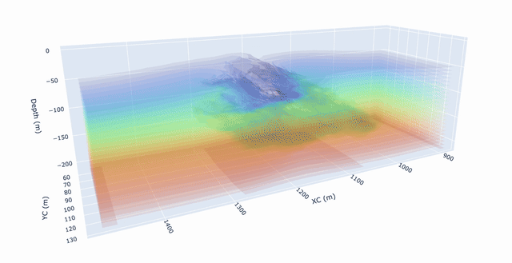

Welcome / Servus / Moin
I'm a phd candidate with wide interests in Earth System Science. My current focus is oceanic convection and its role in global climatic changes like the rapid sea ice decline around Antarctica.
I use a combination of numerical modelling and observations from the field. In the past I've dabbled with vessel motions, tidal and surface wave analysis, ice-breaker design, artificial neural networks, and more.
Here's an example of some recent modelling work, showing 3D temperature surfaces reacting to a convective plume in the marginal sea ice zone:

convective_plume.gif
My PhD is part of the EU-funded VERTEXSO project, led by Prof Dr Alexander Haumann at LMU Munich and the Alfred Wegener Institute (AWI).
Professional interests
- Numerical modelling (NEMO, MITgcm, CMIP-style ensemble intercomparisons) and Linux topics
- Geophysical Fluid Dynamics, especially convection
- Sea ice and the high latitudes
-
Some favourite related books:
- The Sea Around Us by Rachel Carson
- South by Ernest Shackleton
- At the Mountains of Madness by H. P. Lovecraft
- I'm currently reading Thinking In Systems: A Primer by Donella Meadows, with a nascent interest in socio-technical systems — i.e., how will changes in the polar climate system *materially* affect people at lower latitudes?
In early 2024, I finished my MSc in Earth and Atmospheric Sciences under the supervision of Dr Paul Myers. Before getting into oceanography I studied Ocean and Naval Architectural Engineering.